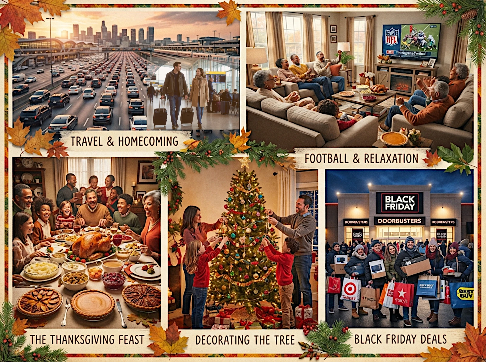
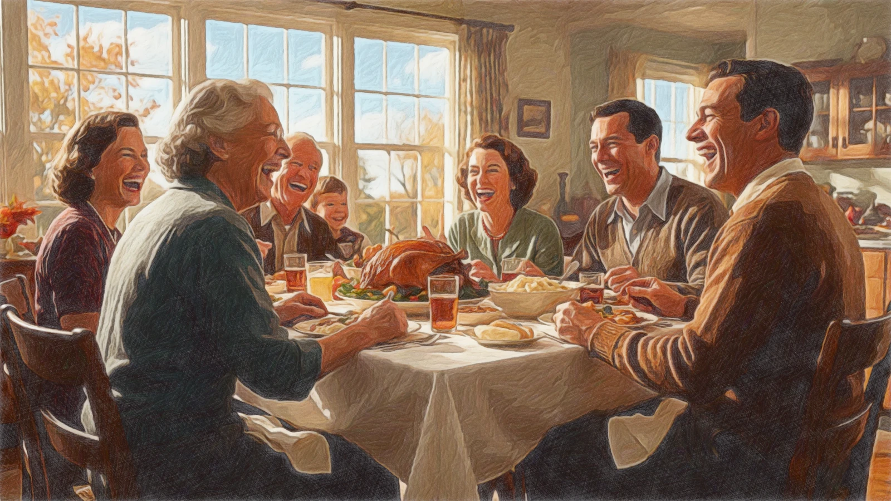
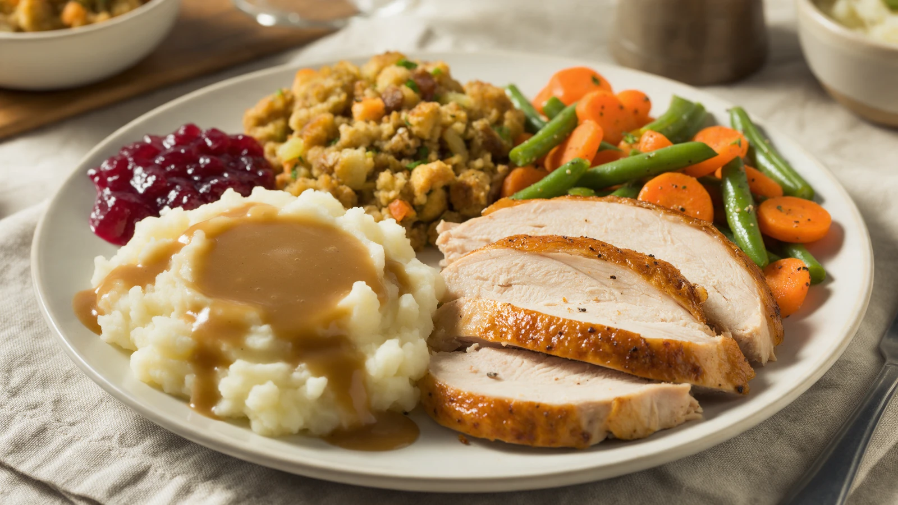

Thanksgiving Weekend: Food, Football, Shopping, and the Holiday Season Kickoff

For millions of Americans, Thanksgiving is more than just a meal with family. It's a four day holiday, and an opportunity to travel, reconnect with relatives, enjoy good food, and get a head start on Christmas shopping.
The Great Thanksgiving Getaway
In the days leading up to Thanksgiving, airports, highways, and train stations become exceptionally busy. Given the size of the country, it isn't unusual for people to drive for eight hours or fly across the whole continent. Once they arrive at their parents' or grandparents' home, the house can quickly become crowded, noisy, and wonderfully chaotic.
A Feast That Lasts for Hours

The main event, the Thanksgiving meal, takes place on Thursday. Some families sit down around noon, while others wait until four or five o'clock. Either way, nobody is expected to rush.
The traditional spread is impressive. A large roasted turkey usually takes center stage, accompanied by mashed potatoes, gravy, stuffing, sweet potatoes, cranberry sauce, and vegetables. Pumpkin pie, pecan pie, and apple pie often make an appearance for dessert.

There is usually more food than everyone can eat in one meal. After several helpings, guests begin to feel completely stuffed, and conversation gradually slows down. In many households, the father and uncles can be found stretched out on the sofa, or slumped in chairs, fast asleep in front of a televised football game.
The Leftover Marathon
One advantage of preparing such a large meal is that nobody needs to cook much for the next few days. Refrigerators are packed with leftovers, and turkey sandwiches abound well into the next week.
Black Friday and the Shopping Frenzy
Black Friday is famous for its enormous discounts on electronics, clothing, household appliances, and Christmas gifts. Some shoppers get up at the crack of dawn to find special offers, while others prefer to browse online from home. Some even stand in long lines before the shops open.
Not everyone wants to spend Friday in a shopping mall. Some families prefer to visit restaurants, catch a movie, explore a nearby town, visit old friends, or simply relax together.
The Holiday Season Kickoff
(From Thanksgiving to New Year's Day)
For many households, the weekend also marks the start of the Holiday Season. Saturday or Sunday is a popular time to put up the Christmas tree. Children help hang ornaments while parents untangle strings of lights.
By Friday, city streets have turned on the Christmas lights, and department stores have put up holiday displays and elaborate window decorations. Christmas music begins to fill the shops, and the excitement of the approaching season begins.
By Sunday evening, the long weekend is drawing to a close. Suitcases are packed, visitors head home, and everyone prepares to return to work. But the transition into the Christmas season is already underway. For many Americans, Thanksgiving weekend is the perfect combination of family time, good food, shopping madness, and the anticipation of the weeks ahead.